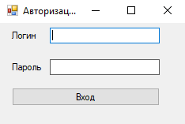

Визуальное программирование — способ создания программы для ЭВМ путём манипулирования графическими объектами вместо написания её текста.
В настоящее время на рынке программного обеспечения наиболее распространенными и покупаемыми являются такие среды визуального программирования как Borland Delphi, С++ Builder, Visual Studio 2005 Standard Edition.
Рабочим языком Delphi является Object Pascal - язык программирования, включающий обработчик ошибочных ситуаций и исключений, который позволяет существенно увеличить стабильность и надежность работы программы. Увеличение вероятности повторного использования кода благодаря принципу наследования визуальных форм и другие новые возможности этого инструмента, среди которых наиболее выделяются кэширование обновлений, фильтры, фоновое выполнение запросов, работа с различными форматами данных.
Стоит также отметить высокую быстроту компиляции, что заметно уменьшает затраты на отладку отдельных частей программы. Компиляция по архитектуре Pentium также увеличивает производительность системы построенной в этой среде. Возможность использования напрямую, а также косвенно API - функций, повышает жизнестойкость системы среди разработчиков больших приложений, использующих всю мощность операционной среды Windows.
Кроме того, значительным достоинством программных средств Borland Delphi является базы знаний языка, заложенная еще при программировании в ранних версиях Pascal под DOS, учитывая, что структура и семантика визуального программирования не претерпела никаких изменений.
Интегрированная среда разработки Borland Delphi основана на многочисленных встроенных функциях и классах из структуры библиотеки классов, известной как Visual Component Library (VCL, библиотека визуальных компонентов). Большинство этих классов в действительности являются потомками других классов из VCL. Они позволяют:
Си ++ Builder имеет те же возможности, что и Delphi, однако имеет и существенные преимущества, такие как: визуальная среда разработки, имеет ряд дополнительных функций, по сравнению с Delphi, что облегчает и ускоряет разработку приложений; наличие библиотеки шаблонов STL (Standard Template Library); поддержка библиотеки MFC (Microsoft Foundation Classes); возможность импорта и дальнейшей компиляции приложений Visual C++, работающих с MFC; больший, по сравнению с Delphi, объем сервисных функций; гибкость и расширяемость языка C++, за счет возможности перегрузки операторов, создания библиотек шаблонов и т.д.
К числу достоинств С++ Builder можно отнести:
Однако следует отметить, что Си предоставляет средства лишь последовательного управления ходом вычислений: механизм ветвления по условиям, циклы, составные инструкции, подпрограммы - и не содержит средств мультипрограммирования, параллельных процессов, синхронизации и организации сопрограмм. На языке Си написаны практически все приложения под UNIX.
К недостаткам можно отнести синтаксис языка Си, в силу своей гибкости, может сделать код программы сложно читаемым и не содержит средств мультипрограммирования, параллельных процессов, синхронизации и организации сопрограмм.
Эта версия Visual Studio представляет собой профессиональный инструмент начального уровня. В нем сочетается простота версий Express и мощные средства разработки, необходимые для:
Также Visual Studio позволяет:
Стоит также отметить поддержку многоязыковой среды разработки приложений CLR (Common Language Runtime). Эта возможность появилась благодаря универсальному межъязыковому интерфейсу Common Language Infrastructure, или CLI, который поддерживает разработку программных компонентов на различных языках программирования.
При этом несомненным преимуществом для программистов является то, что они могут разрабатывать (или дорабатывать) программное обеспечение на наиболее подходящем языке программирования.
В среде разработки Visual Studio 2005 используется технология Microsoft.net - это программная технология, для создания как обычных программ, так и веб-приложений.
Поэтому, во-первых, основные сервисные возможности для разработчиков, которые предоставляет среда.net (отладка, анализ кода и т.д.) не зависят от конкретного языка программирования, и, следовательно, программистам нет необходимости заново постигать особенности среды разработки, если требуется перейти с одного языка на другой. Например, служба, написанная на C++ для Microsoft.net, может обратиться к методу класса из библиотеки, написанной на Delphi; на C# можно написать класс, наследующий от класса, написанного на Visual Basic.net, а исключение, созданное методом, написанным на C#, может быть перехвачено и обработано в Delphi. Каждая библиотека (сборка) в.net имеет сведения о своей версии, что позволяет устранить возможные конфликты между разными версиями сборок.
Во-вторых, несмотря на то, что еще не все языки программирования поддерживаются.net, существует возможность самостоятельной разработки транслятора для любого языка программирования, причем это не вызывает трудностей даже у программистов, практически не имеющих профессиональной подготовки в области разработки компиляторов.
Благодаря возможностям среды разработки Microsoft Visual Studio.net и спецификации Microsoft.net Framework корпорация Microsoft предоставляет разработчикам самые эффективные средства для быстрого создания и развертывания современных приложений и веб-служб XML.
Платформа Microsoft.net, благодаря средствам Visual Studio.net и.net Framework, позволит обеспечить более быструю разработку программных приложений и служб.
После запуска программы перед вами проявиться примерно такое окно:
В окне программы вы можете увидеть:

Чтобы добавить элемент на форму дважды кликните на нужны элемент из панели элементов или зажав мышкой перетащите на рабочую область
Чтобы открыть код нажмите f7 или через контекстное меню нажва правой кнопокй мыша по Form.cs в обозревателе решений
С помощью специального окна Properties (Свойства) справа Visual Studio предоставляет нам удобный интерфейс для управления свойствами элемента:
Большинство этих свойств оказывает влияние на визуальное отображение формы. Пробежимся по основным свойствам:
Name: устанавливает имя формы - точнее имя класса, который наследуется от класса Form
BackColor: указывает на фоновый цвет формы. Щелкнув на это свойство, мы сможем выбрать тот цвет, который нам подходит из списка предложенных цветов или цветовой палитры
BackgroundImage: указывает на фоновое изображение формы
BackgroundImageLayout: определяет, как изображение, заданное в свойстве BackgroundImage, будет располагаться на форме.
ControlBox: указывает, отображается ли меню формы. В данном случае под меню понимается меню самого верхнего уровня, где находятся иконка приложения, заголовок формы,
а также кнопки минимизации формы и крестик. Если данное свойство имеет значение false, то мы не увидим ни иконку, ни крестика, с помощью которого обычно закрывается форма
Cursor: определяет тип курсора, который используется на форме
Enabled: если данное свойство имеет значение false, то она не сможет получать ввод от пользователя, то есть мы не сможем нажать на кнопки,
ввести текст в текстовые поля и т.д.
Font: задает шрифт для всей формы и всех помещенных на нее элементов управления. Однако, задав у элементов формы свой шрифт, мы можем тем самым переопределить его
ForeColor: цвет шрифта на форме
FormBorderStyle: указывает, как будет отображаться граница формы и строка заголовка. Устанавливая данное свойство в None можно создавать внешний
вид приложения произвольной формы
HelpButton: указывает, отображается ли кнопка справки формы
Icon: задает иконку формы
Location: определяет положение по отношению к верхнему левому углу экрана, если для свойства StartPosition установлено значение Manual
MaximizeBox: указывает, будет ли доступна кнопка максимизации окна в заголовке формы
MinimizeBox: указывает, будет ли доступна кнопка минимизации окна
MaximumSize: задает максимальный размер формы
MinimumSize: задает минимальный размер формы
Opacity: задает прозрачность формы
Size: определяет начальный размер ф ормы
StartPosition: указывает на начальную позицию, с которой форма появляется на экране
Text: определяет заголовок формы
TopMost: если данное свойство имеет значение true, то форма всегда будет находиться поверх других окон
Visible: видима ли форма, если мы хотим скрыть форму от пользователя, то можем задать данному свойству значение false
WindowState: указывает, в каком состоянии форма будет находиться при запуске: в нормальном, максимизированном или минимизированном
Для взаимодействия с пользователем в Windows Forms используется механизм событий. События в Windows Forms представляют стандартные события на C#, только применяемые к визуальным компонентам и подчиняются тем же правилам, что события в C#. Но создание обработчиков событий в Windows Forms все же имеет некоторые особенности.
Прежде всего в WinForms есть некоторый стандартный набор событий, который по большей части имеется у всех визуальных компонентов. Отдельные элементы добавляют свои события, но принципы работы с ними будут похожие. Чтобы посмотреть все события элемента, нам надо выбрать этот элемент в поле графического дизайнера и перейти к вкладке событий на панели форм. Например, события формы:
Чтобы добавить обработчик, можно просто два раза нажать по пустому полю рядом с названием события, и после этого Visual Studio автоматически сгенерирует обработчик события. Например, нажмем для создания обработчика для события Load:
Примечание: Некоторые события могут включать другие события, так например событие Click включает в себя также MouseDown (нажатие кнопки мыши) и MouseUp (отпускание кнопки мыши)И в этом поле отобразится название метода обработчика события Load. По умолчанию он называется Form1_Load.
Если мы перейдем в файл кода формы Form1.cs, то увидим автосгенерированный метод Form1_Load:
public partial class Form1 : Form
{
public Form1()
{
InitializeComponent();
}
private void Form1_Load(object sender, EventArgs e)
{
}
}
И при каждой загрузке формы будет срабатывать код в обработчике Form1_Load.
Как правило, большинство обработчиков различных визуальных компонентов имеют два параметра: sender - объект, инициировавший событие, и аргумент, хранящий информацию о событии (в данном случае EventArgs e).
Но это только обработчик. Добавление же обработчика, созданного таким образом, производится в файле Form1.Designer.cs:
namespace HelloApp
{
partial class Form1
{
private System.ComponentModel.IContainer components = null;
protected override void Dispose(bool disposing)
{
if (disposing && (components != null))
{
components.Dispose();
}
base.Dispose(disposing);
}
private void InitializeComponent()
{
this.SuspendLayout();
this.AutoScaleDimensions = new System.Drawing.SizeF(6F, 13F);
this.AutoScaleMode = System.Windows.Forms.AutoScaleMode.Font;
this.ClientSize = new System.Drawing.Size(284, 261);
this.Name = "Form1";
// добавление обработчика
this.Load += new System.EventHandler(this.Form1_Load);
this.ResumeLayout(false);
}
}
}
Для добавления обработчика используется стандартный синтаксис C#: this.Load += new System.EventHandler(this.Form1_Load)
Поэтому если мы захотим удалить созданный подобным образом обработчик, то нам надо не только удалить метод из кода формы в Form1.cs, но и удалить добавление обработчика в этом файле.
Однако мы можем добавлять обработчики событий и програмно, например, в конструкторе формы:
using System;
using System.Collections.Generic;
using System.ComponentModel;
using System.Data;
using System.Drawing;
using System.Linq;
using System.Text;
using System.Threading.Tasks;
using System.Windows.Forms;
namespace HelloApp
{
public partial class Form1 : Form
{
public Form1()
{
InitializeComponent();
this.Load += LoadEvent;
}
private void Form1_Load(object sender, EventArgs e)
{
}
private void LoadEvent(object sender, EventArgs e)
{
this.BackColor = Color.Yellow;
}
}
}
Кроме ранее созданного обработчика Form1_Load здесь также добавлен другой обработчик загрузки формы: this.Load += LoadEvent;, который устанавливает в качестве фона желтый цвет.
Окна открытия и сохранения файла представлены классами OpenFileDialog и SaveFileDialog. Они имеют во многом схожую функциональность, поэтому рассмотрим их вместе.
OpenFileDialog и SaveFileDialog имеют ряд общих свойств, среди которых можно выделить следующие:
DefaultExt: устанавливает расширение файла, которое добавляется по умолчанию, если пользователь ввел имя файла без расширения AddExtension: при значении true добавляет к имени файла расширение при его отсуствии. Расширение берется из свойства DefaultExt или Filter CheckFileExists: если имеет значение true, то проверяет существование файла с указанным именем CheckPathExists: если имеет значение true, то проверяет существование пути к файлу с указанным именем FileName: возвращает полное имя файла, выбранного в диалоговом окне Filter: задает фильтр файлов, благодаря чему в диалоговом окне можно отфильтровать файлы по расширению. Фильтр задается в следующем формате Название_файлов|*.расширение. Например, Текстовые файлы(*.txt)|*.txt. Можно задать сразу несколько фильтров, для этого они разделяются вертикальной линией |. Например, Bitmap files (*.bmp)|*.bmp|Image files (*.jpg)|*.jpg InitialDirectory: устанавливает каталог, который отображается при первом вызове окна Title: заголовок диалогового окна
Отдельно у класса SaveFileDialog можно еще выделить пару свойств:
CreatePrompt: при значении true в случае, если указан не существующий файл, то будет отображаться сообщение о его создании OverwritePrompt: при значении true в случае, если указан существующий файл, то будет отображаться сообщение о том, что файл будет перезаписан
Чтобы отобразить диалоговое окно, надо вызвать метод ShowDialog().
Рассмотрим оба диалоговых окна на примере. Добавим на форму текстовое поле textBox1 и две кнопки button1 и button2. Также перетащим с панели инструментов компоненты OpenFileDialog и SaveFileDialog. После добавления они отобразятся внизу дизайнера формы. В итоге форма будет выглядеть примерно так:
Теперь изменим код формы:
public partial class Form1 : Form
{
public Form1()
{
InitializeComponent();
button1.Click += button1_Click;
button2.Click += button2_Click;
openFileDialog1.Filter = "Text files(*.txt)|*.txt|All files(*.*)|*.*";
saveFileDialog1.Filter = "Text files(*.txt)|*.txt|All files(*.*)|*.*";
}
// сохранение файла
void button2_Click(object sender, EventArgs e)
{
if (saveFileDialog1.ShowDialog() == DialogResult.Cancel)
return;
// получаем выбранный файл
string filename = saveFileDialog1.FileName;
// сохраняем текст в файл
System.IO.File.WriteAllText(filename, textBox1.Text);
MessageBox.Show("Файл сохранен");
}
// открытие файла
void button1_Click(object sender, EventArgs e)
{
if (openFileDialog1.ShowDialog() == DialogResult.Cancel)
return;
// получаем выбранный файл
string filename = openFileDialog1.FileName;
// читаем файл в строку
string fileText = System.IO.File.ReadAllText(filename);
textBox1.Text = fileText;
MessageBox.Show("Файл открыт");
}
}
По нажатию на первую кнопку будет открываться окно открытия файла. После выбора файла он будет считываться, а его текст будет отображаться в текстовом поле. Клик на вторую кнопку отобразит окно для сохранения файла, в котором надо установить его название. И после этого произойдет сохранение текста из текстового поля в файл.
ListBox - представляет собой простой список. Ключевым свойством этого элемента является свойство Items, которое как раз и хранит набор всех элементов списка.
Элементы в список могут добавляться как во время разработки, так и программным способом. В Visual Studio в окне Properties (Свойства) для элемента ListBox мы можем найти свойство Items. После двойного щелчка на свойство нам отобразится окно для добавления элементов в список:
В пустое поле мы вводим по одному элементу списка - по одному на каждой строке. После этого все добавленные нами элементы окажутся в списке, и мы сможем ими управлять:
Добавление:
все элементы списка входят в свойство Items, которое представляет собой коллекцию. Для добавления нового элемента в эту коллекцию, а значит и в список, надо использовать метод Add, например: listBox1.Items.Add("Новый элемент");. При использовании этого метода каждый добавляемый элемент добавляется в конец списка.
Можно добавить сразу несколько элементов, например, массив. Для этого используется метод AddRange:
string[] countries = { "Бразилия", "Аргентина", "Чили", "Уругвай", "Колумбия" };
listBox1.Items.AddRange(countries);
Вставка
В отличие от простого добавления вставка производится по определенному индексу списка с помощью метода Insert:
listBox1.Items.Insert(1, "Парагвай");
Удаление
Для удаления элемента по его тексту используется метод Remove:
listBox1.Items.Remove("Чили");
Чтобы удалить элемент по его индексу в списке, используется метод RemoveAt:
listBox1.Items.RemoveAt(1);
Кроме того, можно очистить сразу весь список, применив метод Clear:
listBox1.Items.Clear();
ComboBox - образует выпадающий список и совмещает функциональность компонентов ListBox и TextBox. Для хранения элементов списка в ComboBox также предназначено свойство Items. Подобным образом, как и с ListBox, мы можем в окне свойств на свойство Items и нам отобразится окно для добавления элементов ComboBox:
И как и с компонентом ListBox, здесь мы также можем программно управлять элементами.
Добавление элементов:
// добавляем один элемент
comboBox1.Items.Add("Парагвай");
// добавляем набор элементов
comboBox1.Items.AddRange(new string[] { "Уругвай", "Эквадор" });
// добавляем один элемент на определенную позицию
comboBox1.Items.Insert(1, "Боливия");
При добавлении с помощью методов Add / AddRange все новые элементы помещаются в конец списка. Однако если мы зададим у ComboBox свойство Sorted равным true, тогда при добавлении будет автоматически производиться сортировка.
Удаление элементов:
// удаляем один элемент
comboBox1.Items.Remove("Аргентина");
// удаляем элемент по индексу
comboBox1.Items.RemoveAt(1);
// удаляем все элементы
comboBox1.Items.Clear();
Мы можем получить элемент по индексу и производить с ним разные действия. Например, изменить его:
comboBox1.Items[0] = "Парагвай";
CheckListBox - представляет симбиоз компонентов ListBox и CheckBox. Для каждого элемента такого списка определено специальное поле CheckBox, которое можно отметить.
Все элементы задаются в CheckedListBox задаются в свойстве Items. Также, как и для элементов ListBox и ComboBox, мы можем задать набор элементов. По умолчанию для каждого добавляемого нового элемента флажок не отмечен:
Для добавления и удаления элементов в CheckedListBox определены все те же методы, что и в LstBox:
ImageList - ImageList не является визуальным элементом управления, однако он представляет компонент, который используется элементами управления. Он определяет набор изображений, который могут использовать такие элементы, как ListView или TreeView.
Чтобы его добавить в проект, его также можно перенести на форму с Панели Инструментов:
Так как компонент не является визуальным элементом, то мы увидим его под формой.
Ключевым свойством ImageList является свойство Images, которое задает коллекцию изображений.
При выборе данного свойства нам окроется окно редактора изображений, в котором мы можем добавить новое изображение или удалить имеющееся.
Чтобы установить размер изображений для данного ImageList можно использовать его свойство ImageSize. По умолчанию ширина и высота имеют значение 16 пикселей, но мы можем установить любое другое, но не больше 256 пикселей.
Также можно добавлять/удалять изображения из списка программно:
imageList1.Images.Add(Image.FromFile(@"C:UsersEugenePicturesuruguay.png"));
imageList1.Images.RemoveAt(0); // удаляем первое изображение
Чтобы дальше разобраться, как использовать ImageList, добавим в него три изображения и поместим на форму три чекбокса. У каждого чекбокса уберем тест и установим свойство ImageList и укажем в свойстве ImageIndex индекс изобраения из imageList1:
И получим форму наподобие следующей:
ListViewItem - Все элементы, как и в других списковых визуальных компонентах, задаются с помощью свойства Items. Но в отличие от ListBox или ComboBox, если мы через панель Свойств откроем окно редактирования элементов ListView:
Каждый отдельный элемент в ListView представляет объект ListViewItem. В окне редактирования элементов мы также можем добавлять и удалять элементы списка. Но кроме того, здесь также мы можем выполнить дополнительную настройку элементов с помощью следующих свойств:
BackColor: фоновый цвет элемента
Checked: если равно true, то данный элемент будет отмечен
Font: шрифт элемента
ForeColor: цвет шрифта
Text: текст элемента
ToolTipText: текст всплывающей подсказки, устанавливаемой для элемента
UseItemStyleForSubItems: если равно true, то стиль элемента будет также использоваться и для всех его подэлементов
Group: задает фоновый цвет элемента
ImageIndex: получает или задает индекс изображения, выводимого для данного элемента
ImageKey: получает или задает индекс изображения для данного элемента
StateImageIndex: получает или задает индекс изображения состояния (например установленного или снятого флажка, указывающего состояние элемента)
SubItems: коллекция подэлементов для данного элемента ListViewItem
Tag: тег элемента
IdentCount: устанавливает отступ от границ ListViewItem до используемого им изображения
Пример ListView:
TreeView - представляет визуальный элемент в виде дерева. Дерево содержит узлы, которые представляют объекты TreeNode. Узлы могут содержать другие подузлы и могут находиться как скрытом, так и в раскрытом состоянии. Все узлы содержатся в свойстве Nodes.
Если мы нажем в панели Свойств на свойство Nodes, то нам откроется окно редактирования узлов TreeView:

В этом окне мы можем добавить новые узлы, создать для них подузлы, удалить уже имеющиеся, настроить свойства узлов. Рассмотрим некоторые свойства, которые мы здесь может установить:
BackColor: фоновый цвет узла
Checked: если равно true, то данный узел будет отмечен флажком
NodeFont: шрифт узла
ForeColor: цвет шрифта
Text: текст узла
ImageIndex: получает или задает индекс изображения, выводимого для данного узла
ImageKey: получает или задает индекс изображения для данного узла
SelectedImageKey: получает или задает индекс изображения для данного узла в выбранном состоянии
SelectedImageIndex: получает или задает индекс изображения, выводимого для данного узла в выбранном состоянии
StateImageIndex: получает или задает индекс изображения состояния (например установленного или снятого флажка, указывающего состояние элемента)
Tag: тег узла
И затем все добавленные узлы мы сможем увидеть в приложении на форме:
Кроме данных свойств, управляющих визуализацией, элемент TreeNode имеет еще ряд важных свойств, которые мы можем использовать к коде:
FirstNode: первый дочерний узел
LastNode: последний дочерний узел
NextNode: возвращает следующий сестринский узел по отношению к текущему
NextVisibleNode: возвращает следующий видимый узел по отношению к текущему
PrevNode: возвращает предыдущий сестринский узел по отношению к текущему
PrevVisibleNode: возвращает предыдущий видимый узел по отношению к текущему
Nodes: возвращает коллекцию дочерних узлов
Parent: возвращает родительский узел для текущего узла
TreeView: возвращает объект TreeView, в котором определен текущий узел
PictureBox - предназначен для показа изображений. Он позволяет отобразить файлы в формате bmp, jpg, gif, а также метафайлы ищображений и иконки. Для установки изображения в PictureBox можно использовать ряд свойств:
Image: устанавливает объект типа Image
ImageLocation: устанавливает путь к изображению на диске или в интернете
InitialImage: некоторое начальное изображение, которое будет отображаться во время загрузки главного изображения, которое хранится в свойстве Image
ErrorImage: изображение, которое отображается, если основное изображение не удалось загрузить в PictureBox
Чтобы установить изображение в Visual Studio, надо в панели Свойств PictureBox выбрать свойство Image. В этом случае нам откроется окно импорта изображения в проект, где мы собственно и сможем выбрать нужное изображение на компьютере и установить его для PictureBox:
И затем мы сможем увидеть данное изображение в PictureBox:
Либо можно загрузить изображение в коде:
pictureBox1.Image = Image.FromFile("C:UsersEugenePictures12.jpg");
WebBrowser предоставляет функции интернет-браузера, позволяя загружать и отображать контент из сети интернет. В то же время важно понимать, что данный элемент не является полноценным веб-браузером, и возможности по его настройки и изменению довольно ограничены.
Рассмотрим основные его свойства:
AllowWebBrowserDrop: при установке для данного свойства значения true можно будет с помощью мыши переносить документы в веб-браузер и открывать их.
CanGoBack: определяет, может ли веб-браузер переходить назад по истории просмотров
CanGoForward: определяет, может ли веб-браузер переходить вперед
Document: возвращает открытый в веб-браузере документ
DocumentText: возвращает текстовое содержание документа
DocumentTitle: возвращает заголовок документа
DocumentType: возвращает тип документа
IsOffline: возвращает true, если отсутствует подключение к интернету
ScriptErrorsSuppressed: указывает, будут ли отображаться ошибки javascript в диалоговом окне
ScrollBarsEnabled: определяет, будет ли использоваться прокрутка
URL: возвращает или устанавливает URL документа в веб-браузере
Кроме того, WebBrowser содержит ряд методов, которые позволяют осуществлять навигацию между документами:
GoBack(): осуществляет переход к предыдущей странице в истории навигации (если таковая имеется)
GoForward(): осуществляет переход к следующей странице в истории навигации
GoHome(): осуществляет переход к домашней странице веб-браузера
GoSearch(): осуществляет переход к странице поиска
Navigate: осуществляет переход к определенному адресу в сети интернет
Таким образом, чтобы перейти к определенному документу, надо исользовать метод Navigate:
// перейти к адресу в интернете
webBrowser1.Navigate("http://google.com");
// открыть документ на диске
webBrowser1.Navigate("C://Images//24.png");
Создадим небольшй веб-браузер. Для этого поместим на форму элементы WebBrowser, TextBox (в него будем вводить адрес) и Button. И в файле формы пропишем следующий код:
public partial class Form1 : Form
{
public Form1()
{
InitializeComponent();
// установка начального адреса
webBrowser1.Url=new Uri("http://google.com");
button1.Click+=button1_Click;
}
private void button1_Click(object sender, EventArgs e)
{
webBrowser1.Navigate(textBox1.Text);
}
}
И по нажатию кнопки произойдет переход к адресу, введенному в текстовое поле:
WebBrowserОпределим форму, на которой будет элемент DataGridView и три кнопки для добавления, удаления и сохранения изменений. Форма в итоге будет выглядеть примерно следующим образом:
Код формы будет выглядеть следующим образом:
using System;
using System.Data;
using System.Windows.Forms;
using System.Data.SqlClient;
namespace AdoNetWinFormsApp
{
public partial class Form1 : Form
{
DataSet ds;
SqlDataAdapter adapter;
SqlCommandBuilder commandBuilder;
string connectionString = @"Data Source=.SQLEXPRESS;Initial Catalog=usersdb;Integrated Security=True";
string sql = "SELECT * FROM Users";
public Form1()
{
InitializeComponent();
dataGridView1.SelectionMode = DataGridViewSelectionMode.FullRowSelect;
dataGridView1.AllowUserToAddRows = false;
using (SqlConnection connection = new SqlConnection(connectionString))
{
connection.Open();
adapter = new SqlDataAdapter(sql, connection);
ds = new DataSet();
adapter.Fill(ds);
dataGridView1.DataSource = ds.Tables[0];
// делаем недоступным столбец id для изменения
dataGridView1.Columns["Id"].ReadOnly = true;
}
}
// кнопка добавления
private void addButton_Click(object sender, EventArgs e)
{
DataRow row = ds.Tables[0].NewRow(); // добавляем новую строку в DataTable
ds.Tables[0].Rows.Add(row);
}
// кнопка удаления
private void deleteButton_Click(object sender, EventArgs e)
{
// удаляем выделенные строки из dataGridView1
foreach(DataGridViewRow row in dataGridView1.SelectedRows)
{
dataGridView1.Rows.Remove(row);
}
}
// кнопка сохранения
private void saveButton_Click(object sender, EventArgs e)
{
using (SqlConnection connection = new SqlConnection(connectionString))
{
connection.Open();
adapter = new SqlDataAdapter(sql, connection);
commandBuilder = new SqlCommandBuilder(adapter);
adapter.InsertCommand = new SqlCommand("sp_CreateUser", connection);
adapter.InsertCommand.CommandType = CommandType.StoredProcedure;
adapter.InsertCommand.Parameters.Add(new SqlParameter("@name", SqlDbType.NVarChar, 50, "Name"));
adapter.InsertCommand.Parameters.Add(new SqlParameter("@age", SqlDbType.Int, 0, "Age"));
SqlParameter parameter = adapter.InsertCommand.Parameters.Add("@Id", SqlDbType.Int, 0, "Id");
parameter.Direction = ParameterDirection.Output;
adapter.Update(ds);
}
}
}
}
Здесь для добавления объекта мы будем обращаться к хранимой процедуре sp_CreateUser
В конструкторе данные загружаются в DataSet, первая таблица которого устанавливается в качестве источника данных для dataGridView1:
dataGridView1.DataSource = ds.Tables[0];
Также в конструкторе устанавливается полное выделение строки и запрет на ручное добавление новых строк:
dataGridView1.SelectionMode = DataGridViewSelectionMode.FullRowSelect;
dataGridView1.AllowUserToAddRows = false;
В обработчике кнопки добавления создается новая строка, которая добавляется в таблицу объекта DataSet. И так как мы ранее установили привязку к источнику данных, то автоматически новая строка также будет добавляться и в dataGridView1:
private void addButton_Click(object sender, EventArgs e)
{
DataRow row = ds.Tables[0].NewRow(); // добавляем новую строку в DataTable
ds.Tables[0].Rows.Add(row);
}
В обработчике кнопки удаления удаляются выделенные строки в dataGridView1. Опять же в силу привязки к источнику данных будет также происходить удаление и из таблицы в DataSet:
private void deleteButton_Click(object sender, EventArgs e)
{
foreach(DataGridViewRow row in dataGridView1.SelectedRows)
{
dataGridView1.Rows.Remove(row);
}
}
Для обновления на не нужна никакая кнопка, так как мы можем нажать на любую ячейку таблицы (кроме заблокированного для изменения столбца Id) и изменить в ней данные. Однако сами по себе добавление новой строки, удаление строк, изменение ячеек ни как автоматически не отразятся на базе данных. И чтобы бд синхронизировалась, пользователю надо будет нажать на кнопку сохранения, обработчик которой выглядит следующим образом:
private void saveButton_Click(object sender, EventArgs e)
{
using (SqlConnection connection = new SqlConnection(connectionString))
{
connection.Open();
adapter = new SqlDataAdapter(sql, connection);
commandBuilder = new SqlCommandBuilder(adapter);
adapter.InsertCommand = new SqlCommand("sp_CreateUser", connection);
adapter.InsertCommand.CommandType = CommandType.StoredProcedure;
adapter.InsertCommand.Parameters.Add(new SqlParameter("@name", SqlDbType.NVarChar, 50, "Name"));
adapter.InsertCommand.Parameters.Add(new SqlParameter("@age", SqlDbType.Int, 0, "Age"));
SqlParameter parameter = adapter.InsertCommand.Parameters.Add("@Id", SqlDbType.Int, 0, "Id");
parameter.Direction = ParameterDirection.Output;
adapter.Update(ds);
}
}
здесь устанавливается у адаптера команда на добавление InsertCommand и затем вызывается метод Update(). В итоге мы можем добавить несколько строк, удалить, изменить, и потом один раз мы нажмем на кнопку, и все изменения будут применены к базе данных.
Добавьте на форму элементы Label1, Label2, TextBox1 и Button1.
Свойства Text элемента Label поменяйте на "Введите имя"
Свойства Text элемента Button1 поменяйте на "Поприветствовать"
Сделайте так чтобы по нажати на кнопку в Label2 выводилось сообщение: "Привет <имя, которое введёт пользователь в TextBox!"
Для этого дважды нажмите на кнопку чтобы создать событие или выбирите событие "Click" в разделе событий и внесети запишите следующий код:
private void button1_Click(object sender, EventArgs e)
{
label1.Text = "Привет " + textBox1.Text + "!";
}
У вас должна получиться примерно такая программа:
Вы научитесь добавлять создавать новые окна и добавлять на него элементы:
Добавьте на форму и кнопку и создайте для неё обработчик событий по нажатию
Добавьте собитию такой код
private void button1_Click(object sender, EventArgs e)
{
//Создание нового окна
Form form2 = new Form();
form2.Show();
//Создание Label и изменение его своства Text и Size
Label Name = new Label();
Name.Text = "Введите новый заголовок: ";
Name.Size = new Size(100,50);
//Создание TextBox изменение его свойства Location
TextBox inputName = new TextBox();
inputName.Location = new Point(Name.Location.X+100);
//Создание кнопки
Button Change = new Button();
//Что будет делать кнопка
void Change_Click(object change, EventArgs a)
{
this.Text = inputName.Text;
}
//Изменения свойств кнопки: Text, Location и присвоение действий кнопки по нажатию на неё
Change.Text = "Поменять заголовк";
Change.Location = new Point(inputName.Location.X + 100);
Change.Click += new EventHandler(Change_Click);
//Добавление Label, TextBox и Button на окно 2
form2.Controls.Add(Name);
form2.Controls.Add(inputName);
form2.Controls.Add(Change);
}
У должна получить такая программа
Создадим простой калькулятор
Добавьте на форму Label1, Label2, Label3, Label4, TextBox1, TextBox2, TextBox3, TextBox4 и Button1, Button2
Переименуйте кнопки в "Очистить" и "Решение"
Для сложения напишите вот такой код:
private void button2_Click(object sender, EventArgs e)
{
if (textBox4.Text == "+") textBox1.Text = Convert.ToString(Convert.ToInt32(textBox2.Text) + Convert.ToInt32(textBox3.Text));
}
Аналогично реализуйте: деление, умножение и вычитания, а так же по нажатию по кнопке "Очистить" все TextBox'ы очищались
Познакомимся с MassageBox на примеры формы регистрации
Добавьте на форму Label1,Label2,TextBox1,TextBox2 и Button1
У вас должна получиться такая форма
Реализуем простой вход с логином "Admin" и паролем "123456" для этого используем такой код:
private void button1_Click(object sender, EventArgs e)
{
if (textBox1.Text == "Admin" && textBox2.Text == "123456") MessageBox.Show("Вы вошли");
}
Получим такое сообщение при верном вводе логина и пароля:
Самостоятельно реализуйте вывод сообщения "Неверно введены логин или пароль" при не правильном вводе данных:
Установите на форме компоненты ListBox1, ListBox2, Edit1, Label1 и 2 кнопки Button1 Button2 c подписями «Добавить» и «Копировать». В поле «Edit1» вводится Фамилия И.О. студента. При нажатии на кнопке «Добавить» информация заносится в список ListBox1.
При нажатии на кнопке “Копировать” данные из ListBox1 копируются в Listbox2. Напишите код для удаления выбранного элемента из списков, выбор осуществляется двойным щелчком мыши по элементу.
Установите на форме компоненты CombotBox1, ListBox2, Edit1, Edit2, Label1,Label, 2 кнопки Button1 Button2 c подписями «Добавить» и «Копировать», две кнопки BitBtn1 и BitBtn2. В поле «Edit1» вводится Фамилия И.О. студента, в поле Edit2 – факультет. При нажатии на кнопке «Добавить» информация заносится в элемент со списком ComboBox1.
При нажатии на кнопке «Копировать» данные из ComboBox1 копируются в Listbox2. Напишите код для удаления выбранного элемента из списка ListBox2, выбор осуществляется двойным щелчком мыши по элементу. При нажатии на кнопке «Удаление всех данных» удаляются данные из ComboBox1 и Listbox2 одновременно.
Установите на форме компоненты CombotBox1, ListBox2, Edit1, Edit2, Edit3, Label1, Label2, label3, 2 кнопки Button1 Button2 c подписями «Cохранить» и «Открыть», кнопку BitBtn1 с рисунком и подписью «Выход». Также установите на форме не визуальные компоненты SaveDialog1, OpenDialog1. В поле «Edit1» вводится Фамилия И.О. студента, в поле Edit2 – факультет, в поле Edit3- курс. После ввода курса при нажатии на клавишу «Enter» данные из текстовых полей Edit1, Edit2, Edit3 передается строке списка ListBox1, между значениями ставятся пробелы. При нажатии на кнопке «Сохранить» информация из ListBox1 записывается в файл, список очищается. При нажатии на кнопке «Открыть» данные из файла заносятся в список ListBox1, причем в текстовых полях отображается выбранная запись списка. Для этого напишите процедуру разделения строки на слова.
Добавьте на форму pictureBox, Button1, Button2 и OpenFileDialog1. Реализуйте открытие картинки в PictureBox через Button1 и закрытие программы через кнопку Button2
Установите на форму элементы ToolStrip1, MenuStrip1, OpenDialog1, SaveDialog1, RichTextBox1. Создайте меню «Файл» с пунктами «Открыть», «Сохранить», разделительная линия, «Выход». На Toolbar1 установите кнопки. Напишите код, чтобы ваша программа была похожа на редактор «Блокнот». В таблицу заносите свойства и методы Memo.
Установите на форме компоненты Imagelist1, ToolStrip1, MenuStrip1, OpenDialog1, FontDialog1, SaveDialog1,RichTextBox1, ToolStrip1 с указанными кнопками, StatusBar1 c двумя панелями для отображения часов и имени файла. Программируйте выбор шрифта, стиля шрифта, размера и цвета символов, сохранение и чтение файлов в редактор RichEdit.

Установите на форме компоненты DateTimePicker1, DataGridView, MenuStrip1, OpenDialog1, FontDialog1, SaveDialog1. Установите для StringGrid1 значение свойства goEditing равным True. Организуйте сохранение таблицы в файле и чтение файла в таблицу через меню. Организуйте выбор текущей даты через элемент DateTimePicker1. Создайте таблицу «Страница классного журнала по предмету».
Установите на форме компоненты TreeView1, listView1, ImageList1,Listbox1. При щелчке по элементам объекта ListView1, список Listbox1 заполняется возможными кличками (именами) собак или кошек. Пример программирования щелчка по элементу объекта ListView1 прииводится ниже.
Установите на форме компоненты Listbox1, Listbox2, СommandButton1. Заполните Listbox1 случайными положительными числами. Программируйте щелчок по кнопке для заполнения Listbox2 сортированными по методу пузырька числами из Listbox1.
Установите на форме компонент PageControl1 и добавьте 4 страницы TabSheet1, TabSheet2, TabSheet3, TabSheet4. На первой странице установите объект MonthCalendar1, на второй – DateTimePicker1, на третьей Timer1 и Label1, на четвертой – Edit1, Edit2. Присвойте заголовки «Календарь», «Текущая дата», «Время», «Принимающая страница» страницам PageControl1 соответственно. Программируйте передачу в компоненты Edit страницы «Принимающая страница» показаний часов, календаря по щелчку.
Создайте программу «Англо-русский словарь для технических терминов информатики». Слова сохраняются в текстовом файле или в базе данных. Словарь заполняется до 6 вариантов переводов английских слов. Создайте меню, панель инструментов, создайте Help-файл. Опишите алгоритмы поиска.
Смоделируйте игру "Питон"
Cоздать базу данных состоящих из следующих полей:(можно использовать MYSQL или ACCESS). Данные в базу данных заносится из веббраузера. Использовать компонент Webbrowser.Написать обработчик для отображения всей базы данных(в данном случае таблицы) в браузере.(Рекомендации: установить на вашем компьютере Denver):
ФИО, дата рождения, курс, специальность, факультет, количество студентов на факультете, количество студентов по данной специальности
Приложение содержит окно редактора php файлов. При нажатии на кнопку “Выполнить” выполняется инструкции php-файла. Денвер должен быть активизирован(Start Denver). Окно ввода php-программы(многострочный редакторы EDIT или RichEdit). Результат отображается в браузере(Компонент Webbrowser)
Создать базу данных SQL-сервер. Разработать приложение обработки базы данных используя технологию ADO. Реализовать функции: Редактирование, добавление записи, удаление записи, поиск записи по значению какого либо поля. Создать отчет, запросы на выборку записей по определенным критериям, передать отчет в Word или EXCEL.